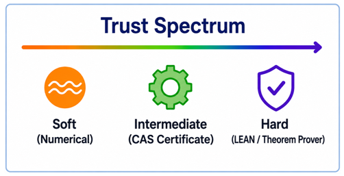

Evaluates challenge submissions that include Lean formalizations, using an AI-assisted pipeline that judges Lean and CAS code alongside natural-language proofs.
Abstract
As AI's mathematical capabilities rapidly improve, meaningful benchmarks are shifting from university-level problems and math olympiads to research-level mathematics. The Ramanujan Challenge is a benchmark comprised of research-level problems in number theory, including unpublished results and open conjectures. It presented concrete formulas for mathematical constants whose correctness can be checked numerically, while their proofs may require non-obvious mathematics. Here, we analyze the Challenge submissions, measuring the relative success of different AI models, Computer Algebra Systems (CAS), and formal tools. We find correct submissions that are conceptually distinct from the official solutions, and a proof of one of the published open conjectures. Evaluating the submissions exposed a second challenge: judging complex proofs reliably at scale. We introduce an AI-assisted evaluation pipeline for natural language proofs, CAS code, and Lean formalizations that assesses semantic and logical correctness. Compared with the conventional one-shot LLM judgment, our pipeline reduces false-positive verdicts on natural language proofs from 23% to 6% and improves judgment accuracy on supporting code from 46% to 58%. This approach provides a methodology for evaluating research-level mathematics at scale, with potential applications across mathematics and AI for science.
Problem
The Ramanujan Challenge posed ten research-level number theory problems: eight unpublished results and two open conjectures about formulas for mathematical constants. It drew 228 multi-format submissions. Judging these proofs reliably at scale is difficult, and one-shot LLM judging produces many false positives.
Approach
Submissions are analysed by AI model and tool used (CAS such as Python, Mathematica and Sage, or Lean) and placed on a 'trust spectrum': numerical, then symbolic CAS, then formal Lean verification. The multi-step evaluation pipeline works as follows. Python scripts are executed and given a basic grade. A GPT agent summarises the natural-language proof, and separately a Claude agent summarises the CAS/Lean files. A third agent compares the two summaries, and a human reviewer uses the results to give the final verdict.

Figure 2 : The trust spectrum.
Results
The pipeline cut false-positive verdicts from 23% to 6% on natural-language proofs and from 38% to 3% on CAS/Lean code. It raised agreement with human verdicts on code from 46% to 58%. Lean-only code had the highest code correctness, and submissions combining Lean with CAS had the most correct natural-language proofs; one open conjecture was proved.
Verdict comparison
NL proof (without)
NL proof (with)
CAS/Lean (without)
CAS/Lean (with)
Agreement
65.7%
66.4%
45.8%
58.3%
Claude stricter than human
2.9%
15.3%
4.2%
29.2%
Human stricter than Claude
31.4%
18.2%
50.0%
12.5%
Agreement of Claude Opus 5 with human verdicts, without vs. with the pipeline